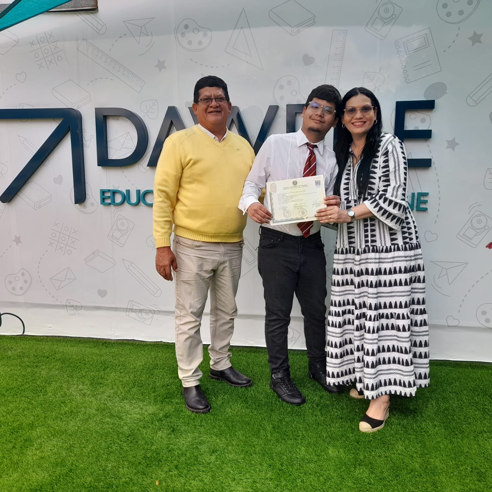

Jose Antonio Rodriguez Coa | WDD 130
Hello! My name is Jose Antonio Rodriguez Coa and I am from Anzoátegui, Venezuela. I am very passionate about programming and I am excited to be studying Web Design and Development to build modern and functional websites. In my free time, I really enjoy going out and sharing great moments with my friends, as well as watching movies to discover new stories. I am looking forward to learning more about the tech industry and seeing where this journey takes me.